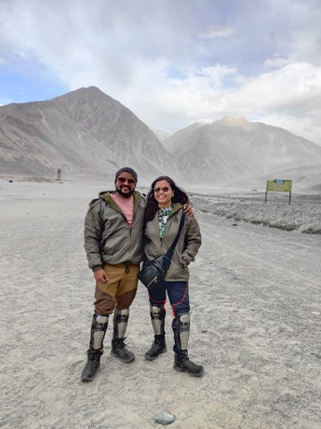
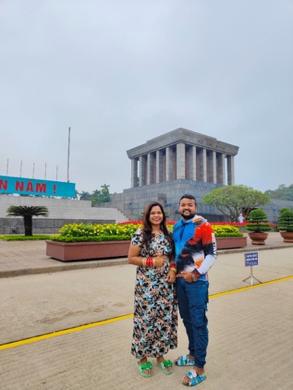
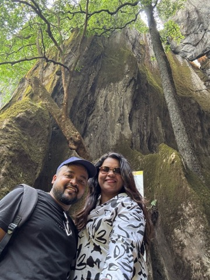
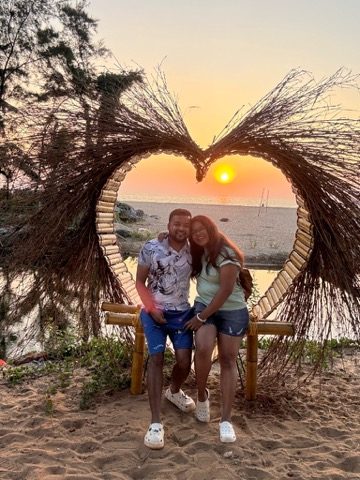
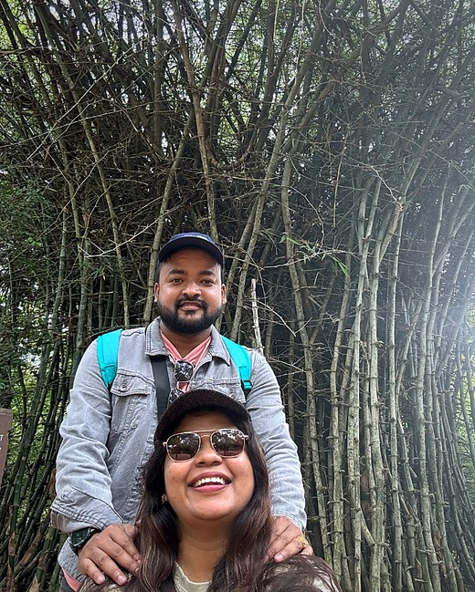
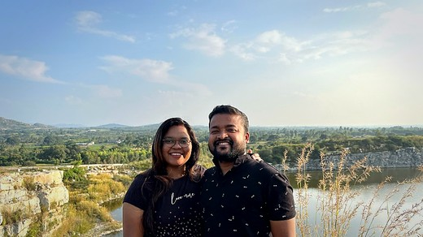
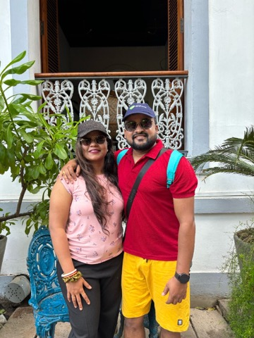
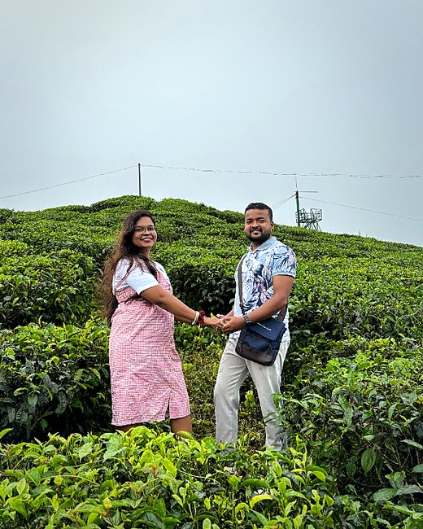
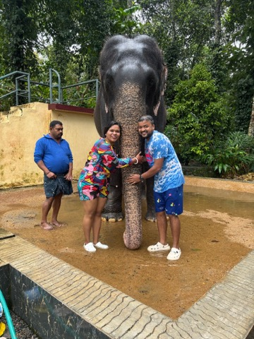
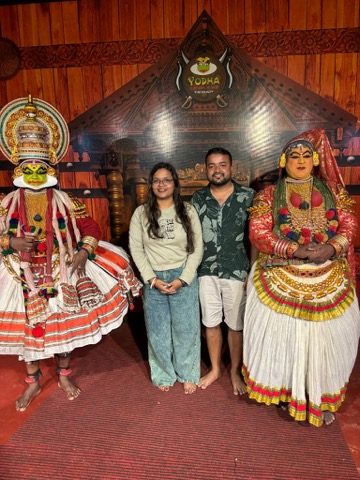

Subhramonyu Das and Flora Priyadarsini co-founded F & S Ventures
as partners in business and in life, combining software engineering
expertise with a commitment to reliable, community-focused growth.

Leading through challenge
Navigating demanding conditions with preparation, discipline,
and a shared commitment to the journey ahead.

Global perspective
Engaging diverse markets and cultures with openness,
curiosity, and strategic awareness.

Strength in partnership
Building on solid foundations—collaboration and mutual trust
at the centre of every venture.

Shared vision
A partnership aligned on long-term goals, balance, and
sustainable value creation.

Operational resilience
Efficient systems and sustainable practices across energy,
wellness, and responsible agriculture.

Long-range strategy
Measured expansion and scalable processes designed for
lasting value—not short-term gains.

Professional presence
Representing F & S Ventures with confidence, clarity,
and consistency in every engagement.

Community-rooted business
Local enterprise built on trust, consistent service, and
long-term commercial relationships.

Ethical engagement
Respect for people, nature, and responsible practices in
every business we pursue.

Cultural integrity
Honouring regional heritage while building ventures with
local relevance and lasting impact.
Promoter
Subhramonyu Das
Co-Founder & Promoter · Software Engineer
Subhramonyu Das is a software engineer with strong experience in
building scalable, reliable, and technology-driven solutions.
With a deep understanding of systems, process optimization, and
digital transformation, he brings a structured and
forward-thinking approach to F & S Ventures. His focus lies in
leveraging technology to build efficient, transparent, and
future-ready businesses.
Promoter
Flora Priyadarsini
Co-Founder & Promoter · Software Engineer
Flora Priyadarsini is a software engineer with expertise in
problem-solving, system design, and operational efficiency. She
plays a key role in shaping the strategic and operational
foundation of F & S Ventures. With a strong eye for detail and
quality, she ensures that the group’s businesses are built on
sustainable practices and long-term value creation.
Promoter Vision
Together, the promoters of F & S Ventures combine technical
expertise with business discipline to create ventures that are
ethical, scalable, and aligned with future growth opportunities.
Their shared vision is to build dependable businesses that balance
innovation, stability, and sustainable expansion.